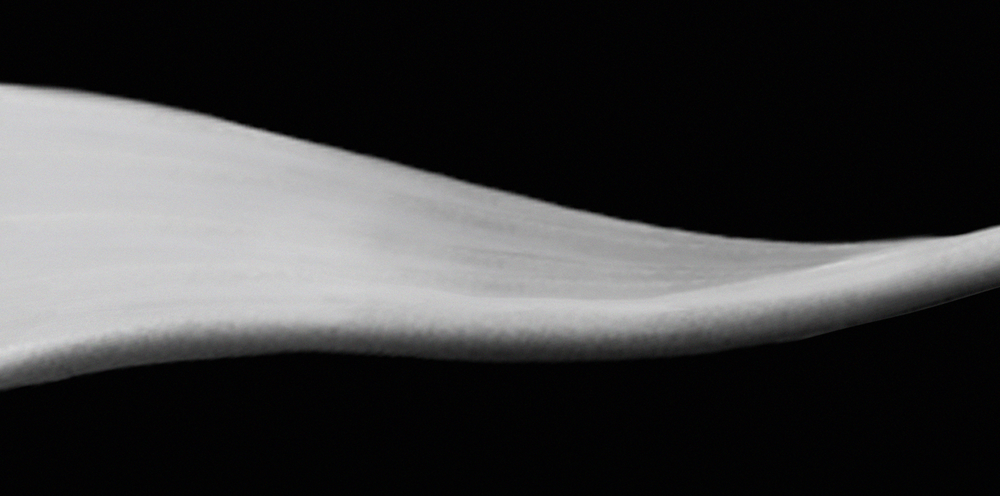
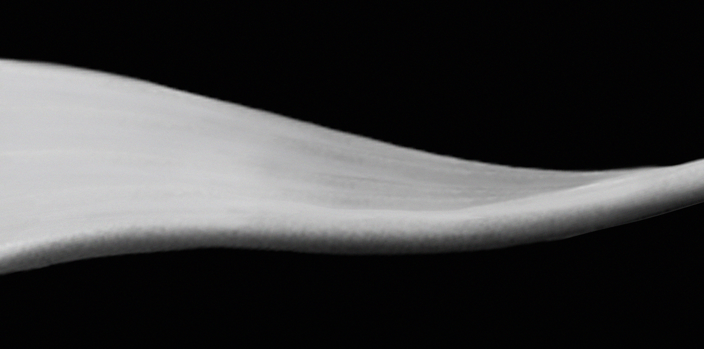

Parasynthesis
– In Spring 2015, a group of visual designers from Parsons documented their unique aesthetic principles together in a published design collective under the instruction of YuJune Park and Caspar Lam from Synoptic Office.
I was one of the designers in this group as well as a contributing author of the final publication, entitled ‘Currents:Translations’.
– The main objective of this publication was for each designer to explore graphic manipulation through their own unique methods, thereby approaching visual design through sets of principles defined by each respective individual.
The publication also has a digital counterpart, which can be accessed here.


 

Relating to ‘Translation’, I decided to use the manipulation of form as a means to exhibit my own concept of visual design. I started off the whole process with an iPhone charger cable wire.
I subsequently split this form by using a Processing sketch which separated RGB channels in photographs, thereby splicing the initial simple shape of the wire into a diverging form.
This exploration into divergence led to experimentation in Processing and Photoshop, and a gradual narrative element was born from manipulating these shapes. The wire had split, and now each branch of it had a personality of its own through the journey of ‘divided explosions’.
I also played around with monochromatism, and decided to stick with black and white due to its sheer simplicity and elegance of expression.
The below picture depicts the climax of the narration, a stark contrast of the form against a white background. The form is shown to taper off the page towards the right before. . .
. . .it cascades again, except it has now taken on a completely different shapely flow.
The basic image of the original wire has been trans-morphed through Processing such that it is no longer a ‘wire’, in the essential sense of the term. It is simply an ambiguous form which conveys visual language in different accents.
‘Parasynthesis’ is the process by which a term is formed by adding a bound morpheme to a combination of existing words. In a book with images in place of words, I used Parasynthesis as a principle – and thereby created new forms by adding structure to an existing form.
The silent, visual narrative culminates in a form that is noticeably different, yet similar to the original wire on the first page(shown on the right). The narrative process hence loops itself, inviting the reader to look back at the original wire and begin the journey yet again.

The digital counterpart of this publication also expresses a similar narrative – a seemingly organic object (a sine wave in this case), goes through a transformative process through which it creates forms of varying aesthetic natures.
The form begins in a dark environment.
As it changes shape and diverges, it emerges into a lighter and whiter environment.
When it converges and assumes another shape, it recess back into the darkness.
It finally concludes in a shape that is similar (or the same) to its original form.